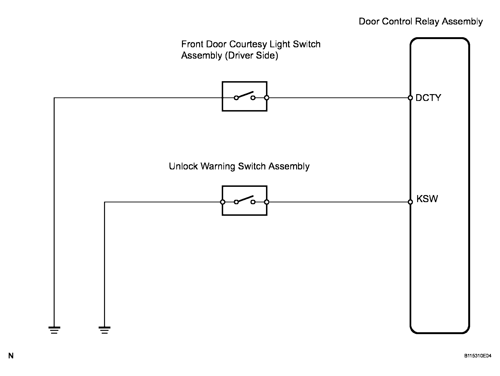

Key Lock-in Prevention Function does not Work Properly: Wiring Diagram
Fig 1: Key Lock-In Prevention Function Does Not Work Properly - Wiring Diagram

Courtesy of © TOYOTA, LICENSE AGREEMENT TMS1002